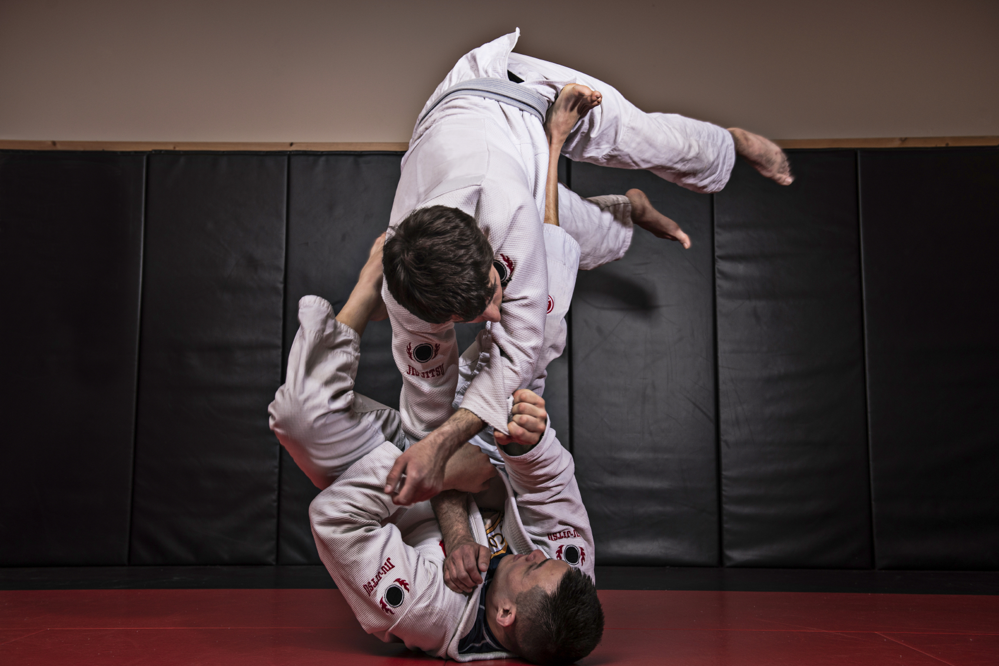

What is Brazilian Jiu-Jitsu?
Brazilian Jiu-Jitsu (BJJ) is a martial art and combat sport that focuses on grappling and ground fighting. It emphasizes the use of leverage and technique to control and submit opponents, making it effective for self-defense and competitive fighting. BJJ practitioners learn various techniques such as joint locks, chokes, and positional control to overcome larger and stronger opponents.
History of Brazilian Jiu-Jitsu
Brazilian Jiu-Jitsu originated in the early 20th century when Japanese judo master Mitsuyo Maeda traveled to Brazil and taught his techniques to the Gracie family. The Gracies adapted and refined the techniques, creating their own style of jiu-jitsu that focused on ground fighting and submissions. BJJ gained international recognition in the 1990s with the rise of mixed martial arts (MMA) competitions, where BJJ practitioners showcased their effectiveness against other martial arts styles.
Why I like it
- Improves physical fitness and cardiovascular health
- Enhances mental toughness and discipline
- Provides effective self-defense skills
- Builds a supportive community among practitioners
Brazilian Jiu-Jitsu Tournaments
There are some well-known BJJ tournaments around the world:
IBJJF World ChampionshipADCC
NAGA